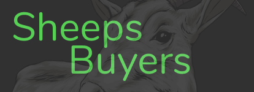

<ion-app>
  <ion-split-pane contentId="main-content">
    <ion-menu contentId="main-content" type="overlay">
      <ion-content>
        <ion-list id="inbox-list">
          <div class="cabeca">
            
          </div>

          <ion-menu-toggle auto-hide="true" *ngFor="let p of appPages; let i = index">
            <ion-item color="primary" (click)="selectedIndex = i" routerDirection="root" [routerLink]="[p.url]" lines="none" detail="false" [class.selected]="selectedIndex == i">
              <ion-icon slot="start" [ios]="p.icon + '-outline'" [md]="p.icon + '-sharp'"></ion-icon>
              <ion-label>{{ p.title }}</ion-label>
            </ion-item>
          </ion-menu-toggle>
          
            <ion-button expand="block" slot="start"  color="danger" (click)="confirmLogout()">
              <ion-icon name="exit"></ion-icon>Sair
            </ion-button>
          
        </ion-list>

        <ion-list class="label" id="labels-list">
          <ion-list-header color="white">Suporte</ion-list-header>

          <ion-item color="primary" *ngFor="let label of labels" lines="none">
            <ion-icon slot="start" ios="bookmark-outline" md="bookmark-sharp"></ion-icon>
            <ion-label>{{ label }}</ion-label>
          </ion-item>
        </ion-list>
      </ion-content>
    </ion-menu>
    <ion-router-outlet id="main-content"></ion-router-outlet>
  </ion-split-pane>
</ion-app>
